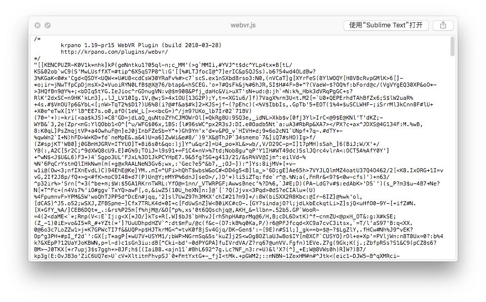
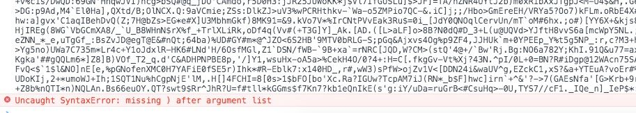
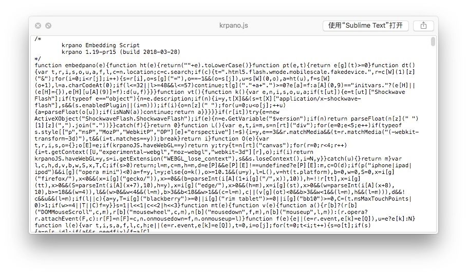
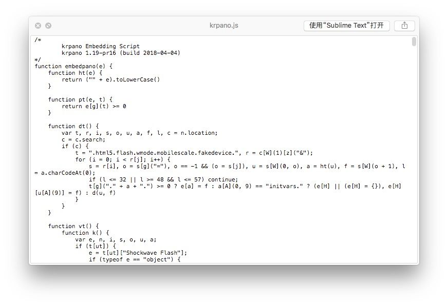
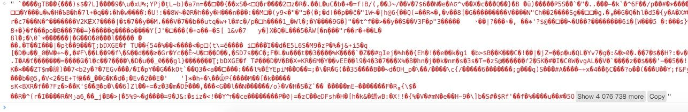
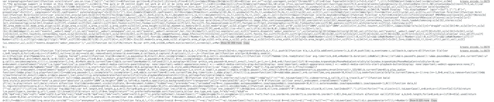

目录
Krpano 是一套全景解决方案 支持视频以及图片，也是商业化项目使用最多的全景播放器之一。不过它并不免费，其特点是在支持 HTML5 模式中采用 WebGL 以及 CSS3D 实现，在不支持 HTML5 标准的浏览器中，可以使用 Flash 实现，而对于我们来说不需要关心 HTML5 和 Flash 的实现，成本就是需要学习 Krpano 的 DSL。 Krpano 语法类似 XML，它有完整的生态和插件机制，也可以使用原生 JS 调用 Krpano 的 SDK， 所以上手并不是特别困难，在这里我主要说下 Krpano 插件的解密、添加对于腾讯 X5 内核的支持以及各个浏览器的支持情况。
插件解密
krpano 几乎所有的 JS 都是经过混淆和加密处理 ，不过既然是 JS 就没有绝对的加密，感兴趣可以看看这篇文章： https://www.zhihu.com/question/28468459/answer/41622094 插件路径位于 viewer/plugins 下, 这次就拿 webvr.js 来解密。
这是正常打开 webvr.js 的内容：

如图所示，在经过测试后发现，这段代码并不能通过常用的方式解密，在仔细观察插件 webvr.js 文件后，几乎所有都是引号开头的，也就是说这是一窜字符串密文，这让我想起了eval 函数 。 在浏览器中直接执行 eval 会报错 
虽然失败了 但是能发现丢失了一个括号，可能还缺少一些依赖字符串 ，浏览器端要执行这段代码 Krpano 一定会有解密的过程，看下 Krpano.js
看起来是混淆加密，解密之后得到
尽管部分代码还是被混淆了 不过也不会影响查找 eval 函数 。 找到如下关键代码：eval(function(f) {
var q = String.fromCharCode
, n = 1
, k = f.length
, b = null
, e = null
, a = 0
, d = 0
, m = 0
, c = 0
, h = 0
, l = 0
, g = 0;
try {
q.apply(null, (new Uint8Array(4)).subarray(2))
} catch (p) {
n = 0
}
e = n ? Uint8Array : Array;
for (b = new e(4 * k / 5); a < k; )
m = f.charCodeAt(a) - 35,
c = f.charCodeAt(a + 1) - 35,
h = f.charCodeAt(a + 2) - 35,
l = f.charCodeAt(a + 3) - 35,
g = f.charCodeAt(a + 4) - 35,
g = 85 * (85 * (85 * (85 * (m - (56 < m | 0)) + (c - (56 < c | 0))) + (h - (56 < h | 0))) + (l - (56 < l | 0))) + (g - (56 < g | 0)),
b[d] = g >> 24 & 255,
b[d + 1] = g >> 16 & 255,
b[d + 2] = g >> 8 & 255,
b[d + 3] = g & 255,
a += 5,
d += 4;
e = new e(b[2] << 16 | b[1] << 8 | b[0]);
k = 8 + (b[6] << 16 | b[5] << 8 | b[4]);
a = 8;
for (d = 0; a < k; ) {
m = b[a++];
c = m >> 4;
for (h = c + 240; 255 === h; c += h = b[a++])
;
for (l = a + c; a < l; )
e[d++] = b[a++];
if (a === k)
break;
g = d - (b[a++] | b[a++] << 8);
c = m & 15;
for (h = c + 240; 255 === h; c += h = b[a++])
;
for (l = d + c + 4; d < l; )
e[d++] = e[g++]
}
b.length = 0;
k = e.length;
if (n && window.TextDecoder)
return (new TextDecoder).decode(e);
a = 0;
for (f = ""; a < k; a += 32E3)
f += q.apply(null, n ? e.subarray(a, a + 32E3) : e.slice(a, a + 32E3));
return f
}('.....'))
能看出这是一段 eval 的闭包 ，由于后面的代码太长 这里就省略了 ，开始以为这就是 eval 解析的地方 我尝试把 webvr.js 的代码贴在闭包后面 不过出错了：

执行完毕之后 发现了一段 embedpano 函数，那么经过解密 中间的 eval 变成了这个函数 在结合之前有一段代码： embedpano(p, "krp:DIFE91v=AhGY8PB}wruuSq(LUNDcJB+.o/j%EK-F^-@NMK17knoYef6U_/+X?/r5:s@0i%vj7H}?_zebl=`r{fxnz.$xV%1_hQHLiUqmFf.....')
基本能确定 这里就是解密的关键，经过查找在 embedpano 中找到了 eval 函数:
function n(a, c, b) {
var krpano = l;
var caller = b;
var args = c;
var resolve = B;
var actions = k;
try {
console.log(a)
console.log(b)
eval(a, b)
} catch (d) {
oa(3, c[0] + " - " + d)
}
}
如上所示，只需要添加一个 console 把最终执行的字符串打印出来 就是插件源码了：

能看到段落中的就是插件源码 之所以有两个是因为这个页面加载了两个插件 根据关键字 webvr 就能够找到你需要的插件源码 。 上面就是 Krpano 的解密过程 ，版本为：krpano-1.19-pr15 解密后的 krpano.js https://gist.github.com/yumexupanic/63be826c78f208309a9378c44a5bfe64 解密后的 webvr.js https://gist.github.com/yumexupanic/ca27d1e4e33c02a9bb5a800b4b106c93X5 内核支持
说明一下 X5 内核只会出现在 Andorid 平台 ，IOS 由于系统的限制必须使用苹果的 WebKit 内核，所以 IOS 上的微信以及 QQ 浏览器 并不是 X5 内核。 Krpano 默认生成的全景视频播放器 是无法在微信浏览器 和 QQ 浏览器中正常访问的，全景图片可以正常使用 。这是因为 X5 内核的限制 所有的视频都会被拦截，拦截具体的表现就是只要页面有使用 video 标签或者是 JS 动态创建了 video 标签 在点击播放时(或者触发时) 会使用 native 组件进行播放 并拦截视频。由于全景视频几乎使用 Canvas 实现 监听的事件都不会被触发 因为本身 video 没有播放 只是组件播放而已。 这个问题在 X5 内核版本 > 036849 中解决了，因为引入了一个重要的元素：
<video src="..."x5-video-player-type="h5"></video>
这个元素意思是使用 HTML5 的播放器 不拦截视频，如果你是 JS 动态创建的 video ，那么加上这个属性就可以了
var video = document.createElement('video');
video.src='...';
video.setAttribute('x5-video-player-type','h5');
那么结合上面的插件解密的教程 我们就可以更改 Krpano 的 videoplayer.js 插件源码:
function ca() {
var a = null,
a = document.createElement("video");
a.setAttribute("x5-video-player-type","h5");
if (!a || !a.play) return null;
ba(a);
return a
}
如果不想使用这种方式 可以使用 Krpano 提供的 开源 video.js 详情： https://krpano.com/plugins/videoplayer/#source 同样 找到 video 标签来进行修改。 修改成功后 直接使用微信访问 (如果没有生效 尝试清楚下微信的缓存) 这种方式只适用于安卓的 X5 内核浏览器，IOS 并不生效。
有声音没画面
还是单独说下这个问题，具体表现就是在个别浏览器中 (搜狗) 点击播放后 看不见全景画面 但可以听到视频声音。 这个问题我查了很多资料 最后总结是 浏览器问题 暂时无法解决。 不过可以了解下原因，最开始出现的浏览器是 chromeium 内核版本为 43.0.2357.78 相关bug: https://bugs.chromium.org/p/chromium/issues/detail?id=494620https://bugs.chromium.org/p/chromium/issues/detail?id=485482 调用 WebGL 播放视频 这个 Bug 就能重现 ，这是一个很简单的例子：http://krpano.com/android/chrome-43-black-video-webgl/ 这种 Bug 只会出现在 Android 平台 随便附上一个 chrome 历史版本下载的网站 https://www.apkmirror.com/apk/google-inc/chrome-beta/chrome-beta-43-0-2357-78-release/chrome-beta-43-0-2357-78-arm64-android-apk-download/download 有兴趣可以测试下。
视频被劫持
除开 Android 平台能解决的劫持问题外，IOS 的 QQ 浏览器以及 UC 浏览器暂时无法解决。 不过能确定的是 它们两家都是有白名单模式的 可以访问 bilibili.com 或者 aibo.3q.qq.com 后面这个是腾讯自家的产品 不会被拦截 为了证实这个想法 我尝试把本地的 DNS aibo.3q.qq.com 指向了 127.0.0.1 结果发现是可以正常播放全景视频的，但并没找到白名单相关入口。
浏览器支持情况
做了一个测试列表，主要是查看几款开源的全景视频和 Krpano 在不同平台以及浏览器的支持。 全景视频播放器：Krpano、insta360、marzipano、pannellum Android： Chrome、Firefox、微信浏览器、QQ 浏览器、360 IOS：Chrome、Firefox、 微信浏览器、QQ 浏览器、360、Safari
| 平台 | 浏览器 | 浏览器版本 | 内核版本 | krpano 全景支持 | insta360 全景支持 | marzipano 全景支持 | pannellum 全景支持 | | --- | --- | --- | --- | --- | --- | --- | --- | | Android | Chrome | 63.0.3239.111 | Chromeium 63.0.3239.111 | 支持 | 不支持(普通视频) | 支持 | 支持 | | Firefox | 59.0.2 | Gecko (Firefox 59) | 支持 | 不支持(普通视频) | 支持 | 不支持(普通视频) | | | 微信浏览器 | 6.6.6 | 腾讯 X5 043906 | 支持 | 不支持(普通视频) | 不支持(视频劫持) | 不支持(提示需要 WebGl) | | | 搜狗浏览器 | 5.12.12.45171 | Chromeium 56.0.2924.116 | 不支持(黑屏) | 不支持(普通视频) | 不支持(无画面) | 不支持(提示需要 WebGl) | | | QQ 浏览器 | 8.3.1.4075 | 腾讯 X5 038370 | 支持 | 不支持(普通视频) | 不支持(无画面) | 不支持(普通视频) | | | UC 浏览器 | V11.9.6.976 | Chromeium 57.0.2987.108 | 不支持(无画面) | 不支持(普通视频) | 不支持(无画面) | 不支持(无画面) | | | 360 浏览器 | 8.2.0.120 | Chromeium 62.0.3202.97 | 支持 | 不支持(普通视频) | 支持 | 支持 | | | 百度浏览器 | 7.18 | Chromeium 48.0.2564.116 | 不支持(无画面) | 不支持(普通视频) | 不支持(无画面) | 不支持(提示需要 WebGl) | | | iPhone | Chrome | 66.0.3359.122 | Webkit 604.1.34 | 支持 | 支持 | 支持 | 支持 | | Firefox | 11.1 | Webkit 604.5.6 | 支持 | 支持 | 支持 | 支持 | | | Safari | 未知 | Webkit 604.5.6 | 支持 | 支持 | 支持 | 支持 | | | 微信浏览器 | 6.6.6 | Webkit 604.5.6 | 支持 | 支持 | 支持 | 支持 | | | 搜狗浏览器 | 5.11.10 | Webkit 604.5.6 | 支持 | 支持 | 支持 | 支持 | | | QQ 浏览器 | 8.4.0.3851 | Webkit 604.3.6 | 不支持(视频劫持) | 不支持(视频劫持) | 不支持(视频劫持) | 不支持(视频劫持) | | | UC 浏览器 | V11.9.4.1067 | Webkit 537.51.1 | 不支持(视频劫持) | 不支持(视频劫持) | 不支持(视频劫持) | 不支持(视频劫持) | | | 360 浏览器 | 4.0.9 | Webkit 604.5.6 | 支持 | 支持 | 支持 | 支持 | | | 百度浏览器 | 4.13.0 | Webkit 604.5.6 | 不支持(无画面) | 不支持(无画面) | 不支持(无画面) | 不支持(无画面) | |
最后
附上两枚 Krpano 激活码（仅供学习） FXsqTqaGNSZER5dSETEm+VzQEh9sWSa5DZMFsSmMxYV9GcXs8W3R8A/mWXrGNUceXvrihmh28hfRF1ivrW0HMzEychPvNiD8B/4/ZzDaUE9Rh6Ig22aKJGDbja1/kYIqmc/VKfItRE2RTSOIbIroxOtsz626NIpxWksAAifwhpNwuPXqDQpz2sRUMBzoPqZktpkItoSenN2mKd8Klfx7pOuB6CIK3e1CDXgyndqOt2mWybLZcU/wfJVAecfxk15ghiqrzaDsbqrdABDowg== ruza4tk2X4MdHuE7djJQGr9QTftMFHiSH2ac5jkIlFgGqG0K0IVQnh5vF/cicLpwedsURI0QTg+UluEgysRLUytpeVFyBTxdwREEIGquRh1Hp2BY2EtZ8kdO2r6CHLJAFlzY5w6au1rnHwRhJXgaK8J75RwK1DYb/OEZ4tD2pniUrnMrpFwGWwcKnxGyNSmMktsU6qadFjKbMH3HUKNXa7Y59lEzbDZJbsTuP+UynwwBhogv8K+byjs2LDvU48sx4/CNHWi26g== Krpano 有提供 CLI 工具来生成全景播放 具体可以参考文档： https://krpano.com/tools/kmakemultires/config/#xmltemplate_hotspot